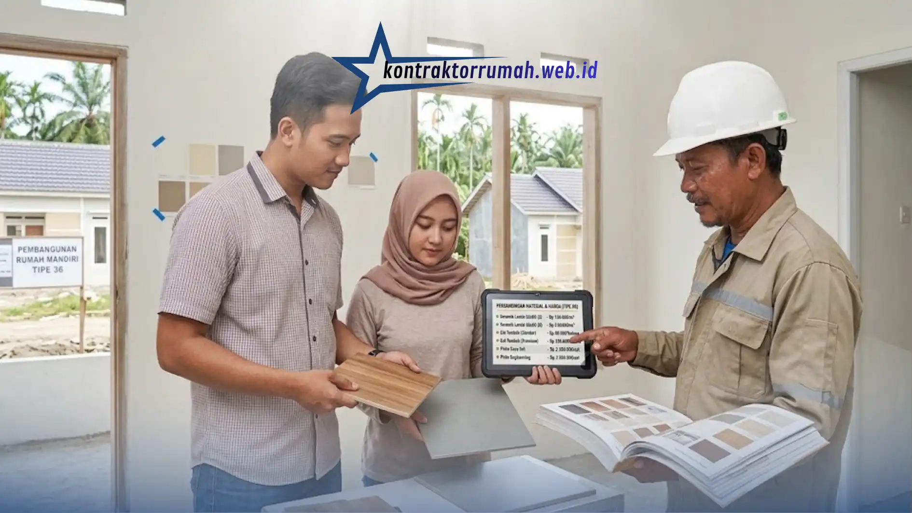

Baru dapat kabar harga tanah naik, eh material bangunan ikut-ikutan naik. Kalau kamu sedang merencanakan hunian pertama, situasi seperti ini pasti bikin was-was. Untungnya, rumah type 36 masih jadi pilihan favorit keluarga muda karena ukurannya pas dan biayanya relatif terjangkau, asal kamu tahu cara menghitungnya dengan benar sejak awal.
Banyak orang mengira estimasi biaya bangun rumah type 36 cukup dihitung dari harga per meter persegi yang beredar di internet. Padahal kenyataannya jauh lebih rumit, karena harga tanah, harga material lokal, hingga sistem upah tukang di tiap daerah bisa sangat berbeda. Supaya kantong tetap aman dan proyek tidak berhenti di tengah jalan, berikut panduan lengkap menghitungnya, langkah demi langkah.
Poin Penting
- Biaya struktur (pondasi, kolom, balok, rangka atap) menyerap porsi terbesar, sekitar 35-40% dari total anggaran, dan tidak boleh dikompromikan demi harga murah.
- Susun RAB detail sebelum mulai membangun, jangan hanya bermodalkan perkiraan kasar.
- Survei harga material ke minimal 3 toko bangunan lokal untuk membandingkan harga sekaligus biaya ongkos kirim.
- Sisihkan 10-15% dari total anggaran sebagai dana jaga-jaga untuk biaya tak terduga.
- Rumah type 36 dengan struktur standar umumnya selesai dalam 3-5 bulan.
Pahami Dulu Komponen Biaya Bangun Rumah
Sebelum masuk ke perhitungan, penting untuk tahu apa saja yang termasuk dalam total biaya membangun rumah. Secara garis besar, komponennya terbagi menjadi 4 bagian berikut.
- Biaya struktur pondasi, kolom, balok, dan rangka atap. Biasanya menghabiskan 35-40% dari total anggaran.
- Biaya arsitektur dinding, kusen, pintu, jendela, dan atap. Porsinya sekitar 30-35%.
- Biaya mekanikal-elektrikal instalasi listrik, air bersih, dan sanitasi. Sekitar 10-15% dari total biaya.
- Biaya finishing cat, keramik, plafon, dan sentuhan akhir lainnya. Sekitar 15-20%, tapi ini bagian yang paling fleksibel tergantung selera dan budget.
Memahami pembagian ini penting supaya kamu tahu di bagian mana kamu bisa berhemat dan di bagian mana kamu sebaiknya tidak mengorbankan kualitas. Struktur dan pondasi adalah dua hal yang jangan pernah dikompromikan demi harga murah.
Buat Rencana Anggaran Biaya (RAB) secara Detail
Jangan pernah membangun rumah hanya bermodalkan "kira-kira". Buatlah daftar RAB yang mencakup seluruh pekerjaan, mulai dari persiapan lahan, pembuatan pondasi, pemasangan dinding, rangka atap, hingga finishing (cat, lantai, dan instalasi listrik/air).
Sebagai gambaran kasar (bukan patokan pasti, karena harga tiap daerah berbeda), berikut simulasi sederhana alokasi biaya untuk rumah type 36 dengan asumsi biaya bangun standar.
| Komponen Pekerjaan | Perkiraan Porsi Anggaran |
|---|---|
| Pekerjaan persiapan & pondasi | 15% |
| Struktur (kolom, balok, sloof) | 20% |
| Dinding & plesteran | 15% |
| Atap & plafon | 15% |
| Lantai & keramik | 10% |
| Pintu, jendela, kusen | 10% |
| Instalasi listrik & air | 10% |
| Finishing & pengecatan | 5% |
Kalau kamu awam soal menyusun RAB, jangan ragu berkonsultasi dengan tukang atau mandor kepercayaanmu, atau memakai jasa konsultan RAB profesional agar tidak ada pos biaya yang terlewat.
Survei Harga Material di Toko Bangunan Lokal
Harga semen atau batu bata di internet bisa jadi berbeda jauh dengan harga di toko bangunan dekat lokasi proyekmu. Sempatkan waktu untuk keliling ke 2-3 toko bangunan terdekat. Tujuannya sederhana: membandingkan harga sekaligus mengecek biaya ongkos kirim. Kadang, selisih harga sedikit lebih mahal tapi bebas ongkir justru lebih hemat di akhir.

Membandingkan harga di beberapa toko bangunan lokal membantu menekan biaya material tanpa mengorbankan kualitas.
Beberapa tips tambahan saat survei material:
- Tanyakan apakah ada harga khusus untuk pembelian dalam jumlah besar (grosir).
- Cek kualitas material secara langsung, jangan hanya percaya foto atau brosur.
- Bandingkan minimal 3 toko sebelum memutuskan supplier utama.
- Perhitungkan juga waktu pengiriman, karena keterlambatan material bisa membuat jadwal proyek molor.
Pilih Sistem Upah Tukang yang Tepat
Secara umum ada dua sistem pembayaran tukang, dan masing-masing punya kelebihan serta risikonya sendiri.
| Aspek | Sistem Harian | Sistem Borongan |
|---|---|---|
| Kepastian biaya | Bisa berubah tergantung lama pengerjaan | Biaya sudah dikunci di awal |
| Kualitas hasil | Cenderung lebih rapi karena dikerjakan santai | Tergantung kejujuran tukang, perlu SPK jelas |
| Kebutuhan pengawasan | Tinggi, harus sering mengecek progres | Lebih rendah, cocok untuk yang sibuk |
| Risiko | Biaya membengkak jika pekerjaan molor | Kualitas bisa dikorbankan demi kecepatan |
| Cocok untuk | Pemilik yang punya waktu luang | Pemilik yang sibuk bekerja |
Apa pun sistem yang dipilih, pastikan ada kesepakatan tertulis mengenai spesifikasi hasil akhir, supaya tidak ada pihak yang merasa dirugikan di kemudian hari.
Siapkan Dana Jaga-jaga (Biaya Tak Terduga)
Kenyataan di lapangan sering berbeda dengan teori di kertas. Entah harga material tiba-tiba naik, cuaca buruk yang menunda pekerjaan, atau ada perubahan desain di tengah jalan. Sisihkan setidaknya 10-15% dari total anggaran khusus untuk dana darurat ini. Dana ini sebaiknya tidak disentuh sama sekali kecuali benar-benar dibutuhkan, agar tidak "kebobolan" untuk keperluan lain.
Pertimbangkan Waktu Pembangunan
Selain biaya material dan upah, waktu pengerjaan juga memengaruhi total biaya. Semakin lama proyek berjalan, semakin besar kemungkinan ada biaya tambahan, baik dari kenaikan harga material maupun tambahan hari kerja tukang.
Rumah type 36 dengan struktur standar umumnya bisa selesai dalam 3-5 bulan, tergantung cuaca, ketersediaan material, dan jumlah tukang yang bekerja.
Catatan dari tim Kontraktor Rumah: Kontraktor Rumah beroperasi sebagai mitra konstruksi berbadan hukum PT resmi, siap membantu penyusunan RAB transparan, survei material, hingga penjadwalan kerja yang jelas sejak awal proyek, sehingga anggaran rumah type 36 kamu tetap aman sampai serah terima.
FAQ Seputar Estimasi Biaya Bangun Rumah Type 36
Menghitung estimasi biaya bangun rumah type 36 memang butuh ketelitian, bukan sekadar tebakan. Dengan memahami komponen biaya, menyusun RAB detail, survei material, memilih sistem upah yang tepat, dan menyiapkan dana jaga-jaga, anggaran rumah impianmu akan jauh lebih terkendali dan proyek pun tidak molor dari jadwal.